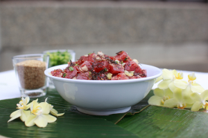
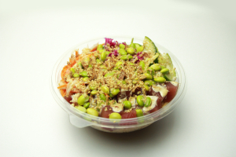
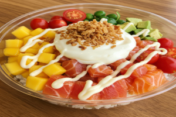

Ensalada poke de atún
Ingredientes
- 200 g de atún fresco (calidad sashimi)
- 1 taza de arroz
- 2 cucharadas de salsa de soja
- 1 cucharadita de aceite de sésamo
- 1/2 aguacate
- 1/2 pepino
- Zanahoria rallada
- Semillas de sésamo
- Cebollino (opcional)
- Zumo de lima o limón (opcional)
Preparación
El poke de atún es un plato fresco y saludable originario de Hawái, elaborado con pescado crudo de alta calidad cortado en dados y acompañado de arroz y otros ingredientes frescos.
Para prepararlo, comienza cocinando el arroz y dejándolo enfriar. Mientras tanto, corta el atún en cubos y mézclalo con salsa de soja, aceite de sésamo y un toque de zumo de lima o limón si deseas más frescura.
Finalmente, monta el poke colocando el arroz como base y añade el atún, junto con el aguacate, pepino y zanahoria. Termina con semillas de sésamo y cebollino para darle un toque extra de sabor.


